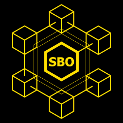

Smit Blockchain Operations
The trustworthy Cardano Stake Pool
Active since 29th of July 2020
Ticker: BKIND

The trustworthy Cardano Stake Pool
Active since 29th of July 2020
Ticker: BKIND
DECENTRALIZE AND HARMONIZE
Delegate to BKIND or to another pool below the saturation point at k = 1000, or give your vote to a DRep.
Your wallet shows the transaction before you sign it; your ADA stays in your wallet.
Every vote BKIND has cast on-chain, as stake pool and as DRep. Click a vote to read the rationale behind it.
If k (the protocol parameter stakePoolTargetNum) goes from 500 to 1000, a stake pool saturates at about 38.9 million ADA. Above that point the rewards per ADA go down. The pools below are alive and have less stake than that.
We are strongly in favor of decentralization. That is why we support raising k to 1000, and why this list starts from the saturation point at k = 1000. The pools that need more delegation the most are at the top: the list starts with the smallest pools.
Loading the list…
Every day, from the Cardano chain, a pool is listed when it:
k = 1000: the ADA outside the reserves, divided by 1000.Pools of exchanges and of the founding entities are left out on purpose: this list is meant to spread stake over independent pool operators. The seven EMURGO pools that were handed over in September 2026 (now MURA1 to MURA7) stay off the list, because there is no transparency about the takeover. All of these are recognized by pool ID, so a pool that changes its name stays off the list.
A relay that does not answer from here is not proof that a pool is down: some pools only accept known peers. Still, a pool whose relays do not answer is not on this list: keeping its relays reachable is the responsibility of the pool operator. The list is made by Smit Blockchain Operations, operator of pool BKIND, which is on it by the same rules as every other pool.
Click a heading to sort. Click a ticker or a name to open the pool on Cardanoscan in a new window to view the pool’s details. Click Delegate to delegate to the pool with your wallet.
| Ticker | Name | Stake (ADA) | Blocks 2026 | Blocks, last 10 epochs | Delegate |
|---|
Who decides about Cardano? Until recently, mainly the companies that founded it. Since early 2025 that is the people who hold ADA: together they decide how the network changes and how the money in its treasury is spent. Cardano's constitution says the community governs itself, in a process that is open, transparent and protected from undue influence.
You take part through a representative, a DRep. Your DRep votes on your behalf, with the weight of your ADA. You choose who that is, you can switch at any time, and your ADA never leaves your wallet.
Your voice only counts if your DRep votes the way you would. A DRep represents you, not themselves. So choose someone whose views you share, check how they vote and why, and switch when they no longer speak for you.
Why does it matter who holds the vote? Because power that sits with a few can be used by a few. A small group can be pressured, bought, or simply share the same interests, and then it decides for everyone: about the treasury, the rules, even the constitution itself. Spread over many independent voices, that power is hard to capture. Decentralization is not only about who runs the network, but also about who decides over it.
Today very few hold that power.
Choose a DRep who votes in line with your views and explains why. If several DReps fit, a smaller one helps spread the vote. The list starts with the DReps that voted and explained their vote most often; among equals, the smallest comes first.
BKIND is in this list on the same terms as every other DRep. BKIND is both a stake pool operator and a DRep.
Loading the list…
Every day, from the Cardano chain:
DReps of the founding entities are left out on purpose. Cardano's own roadmap describes the goal of its governance as a network that is “no longer under IOHK's management”, with its future “in the hands of the community”. This list follows that direction: it is meant to spread the vote over independent voices. The founding entities are free to vote as DReps, and their voting power still counts in the figures above. They are recognized by DRep ID, so a DRep that changes its name stays off the list.
Click a heading to sort. Click a name to open the DRep on Cardanoscan in a new window: there you can see how the DRep voted and why, and check whether that matches your own views. Click Delegate to give your vote to the DRep with your wallet.
| DRep | Voting power (ADA) | Share | Delegators | Voted | Explained | Last vote | Delegate |
|---|
Smit Blockchain Operations runs BKIND, a Cardano stake pool that has produced blocks since July 2020. Our goal has not changed since day one: a dependable, transparent pool that strengthens Cardano's decentralization and that delegators can trust with their stake.
We take part in on-chain governance as a registered DRep, and we publish the reasoning behind every vote we cast.
Security runs through everything we do. We build and open-source air-gapped tools for stake pool operators, DReps and wallet holders, so the safety of your keys never depends on software you are forced to trust blindly.
We also audit the Cardano ledger directly, with our own tooling written in Haskell. With it we do hands-on on-chain forensics: we trace how value really moves and check claims against what the ledger itself records, so a genuine problem can be told apart from a false alarm.
One idea ties it together: decentralize and harmonize. Blockchain is at its best when it helps people rely on one another instead of on a handful of gatekeepers.
For questions or requests, feel free to contact us:
developmentbkind@gmail.com